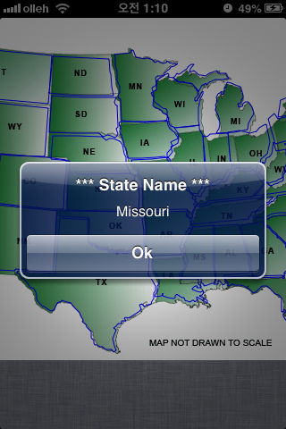
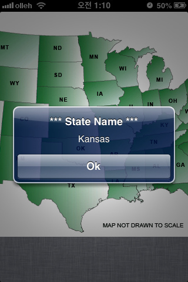

An image view for complex polygon map
An UIImageView subclass to select a complex polygon map out of many.
Extremely useful for handling touches on, for example, Europe map, or an eye of owl.

OS_OBJECT_USE_OBJC flag. You can read more in detail at OMG, GCD+ARC
MTImageMapView *viewImageMap =\
[[MTImageMapView alloc]
initWithImage:
[UIImage imageNamed:@"sample_image.png"]
];
[viewImageMap setDelegate:self];
[self.view addSubview:viewImageMap];
NSArray *arrStates = \
[NSArray arrayWithObjects:
@"542,94,568,94,568,111,542,111"
@"555,150,574,150,574,161,555,161"
@"535,149,551,149,551,159,535,159"
,nil];
[viewImageMap
setMapping:arrStates
doneBlock:^(MTImageMapView *imageMapView) {
NSLog(@"Mapping complete!");
}];
-(void)imageMapView:(MTImageMapView *)inImageMapView
didSelectMapArea:(NSUInteger)inIndexSelected
{
[[[[UIAlertView alloc]
initWithTitle:@"*** State Name ***"
message:[stateNames objectAtIndex:inIndexSelected]
delegate:nil
cancelButtonTitle:@"Ok"
otherButtonTitles:nil]
autorelease] show];
}
US states image and all coordinates are credited to Illinois Center for Information Technology and Web Accessibility.
BSD license follows (http://www.opensource.org/licenses/bsd-license.php) Copyright © 2012-2013 Sung-Taek, Kim All Rights Reserved. Redistribution and use in source and binary forms, with or without modification, are permitted provided that the following conditions are met: Redistributions of source code must retain the above copyright notice, this list of conditions and the following disclaimer. Redistributions in binary form must reproduce the above copyright notice, this list of conditions and the following disclaimer in the documentation and/or other materials provided with the distribution. Neither the name of Sung-Ta ek kim nor the names of its contributors may be used to endorse or promote products derived from this software without specific prior written permission. THIS SOFTWARE IS PROVIDED BY THE COPYRIGHT HOLDERS AND CONTRIBUTORS "AS IS" AND ANY EXPRESS OR IMPLIED WARRANTIES, INCLUDING, BUT NOT LIMITED TO, THE IMPLIED WARRANTIES OF MERCHANTABILITY AND FITNESS FOR A PARTICULAR PURPOSE ARE DISCLAIMED. IN NO EVENT SHALL THE COPYRIGHT HOLDER OR CONTRIBUTORS BE LIABLE FOR ANY DIRECT, INDIRECT, INCIDENTAL, SPECIAL, EXEMPLARY, OR CONSEQUENTIAL DAMAGES (INCLUDING, BUT NOT LIMITED TO, PROCUREMENT OF SUBSTITUTE GOODS OR SERVICES; LOSS OF USE, DATA, OR PROFITS; OR BUSINESS INTERRUPTION) HOWEVER CAUSED AND ON ANY THEORY OF LIABILITY, WHETHER IN CONTRACT, STRICT LIABILITY, OR TORT (INCLUDING NEGLIGENCE OR OTHERWISE) ARISING IN ANY WAY OUT OF THE USE OF THIS SOFTWARE, EVEN IF ADVISED OF THE POSSIBILITY OF SUCH DAMAGE.
VER : 1.1
UPDATED : Jan. 22, 2013